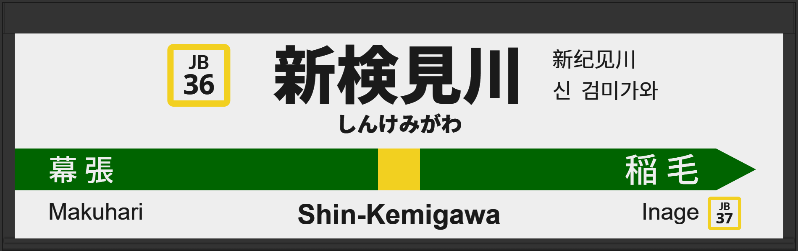

| ←幕張 | ■ 中央・総武線(各駅停車) | 稲毛→ |
|---|
1999年6月に初期型ATOS放送を導入。
2007年頃に旧型ATOS放送に更新される。
2013年3月に常磐改良型に更新される。
2025年6月に1番線の発車メロディが「Verde Rayo」から「JRE-IKST-003-1」へ、2番線は「Gota del Vient」から「JRE-IKST-003-2」に変更。
| 1 | ■ 中央・総武線(各駅停車) 三鷹方面 |
1番線接近放送 1番線到着放送 |
初期型でした。 放送は「三鷹行」です。 |
|---|---|---|---|
| 2 | ■ 中央・総武線(各駅停車) 千葉方面 |
2番線接近放送 2番線到着放送 |
初期型でした。 放送は「千葉行」です。 |